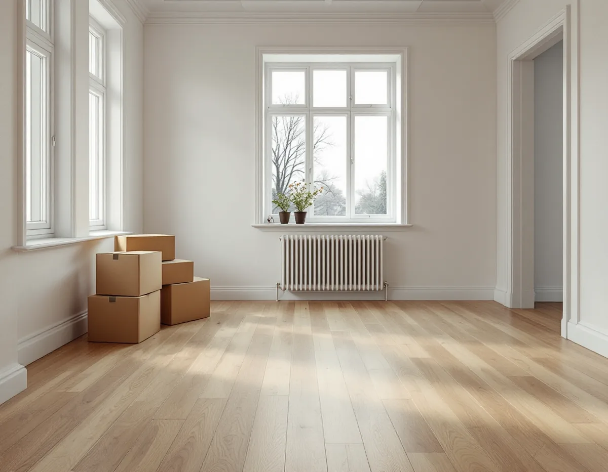
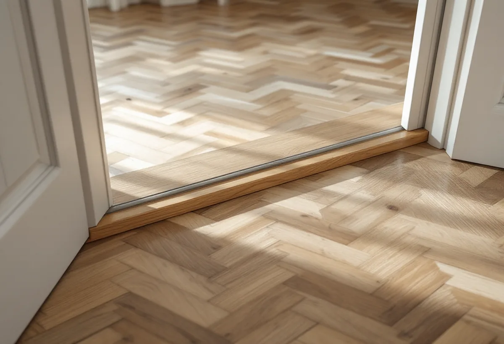

Platsbesök
Vi ser på golvet, gärna före tillträdet om säljaren går med på det.
Mellan tillträdet och flyttlasset står lägenheten tom, och då går det att slipa alla rum på en gång utan att bära runt på möbler. De veckorna räcker längre om slipningen är planerad innan nycklarna lämnas över. Geal Entreprenad AB slipar och ytbehandlar parkett och trägolv i lägenheter på Södermalm, och vi lägger upp arbetet efter ditt tillträdesdatum.

Stadens områdesfakta för 2025 visar hur rörligt Södermalm är. Under året flyttade 13 851 personer in till stadsdelsområdet och 14 718 flyttade ut. Av de 77 525 bostäderna är 43 680 bostadsrätter.
De flesta lägenheterna är små. I flerbostadshusen finns 17 165 ettor och 21 466 tvåor, och 7 856 lägenheter saknar kök. I en liten lägenhet finns det sällan något rum att ställa möblerna i medan golvet slipas, och därför är tiden innan du flyttar in ett bra tillfälle.

Skatteverket ger rotavdrag för att renovera en bostad som du nyligen har köpt men ännu inte flyttat in i. Villkoren är att ingen annan bor i bostaden medan arbetet utförs och att du flyttar in direkt efter renoveringen. Ska lägenheten i stället hyras ut eller säljas ges inget avdrag.
Du måste också äga bostaden under den tid arbetet utförs, så för att få avdraget kan slipningen börja först efter tillträdet. I en bostadsrätt ska arbetet göras innanför lägenhetens väggar, tak och golv och gälla något som du har underhållsansvar för enligt föreningens stadgar. Läs därför stadgarna innan datumet bokas. Om grannar, ljud och damm under själva slipningen finns det mer på sidan om golvslipning på Kungsholmen.
I Svenska Byggnadsvårdsföreningens tidning beskriver Nordiska museet hur flytande golv blev populärt från mitten av 1940-talet, bland annat i hyreshus. På betongbjälklaget lades en sandbädd som jämnades ut, och på den låg lösa träreglar som lamellbrädorna fästes vid. Golvet blev bättre ljudisolerat och något fjädrande att gå på.
Parkett på sand finns också i nyare hus. I Norra Hammarbyhamnen, invid Hammarbykanalen och nära Södermalms äldre stenstad, byggde HSB stora flerbostadshus runt 1980. En antikvarie vid Stockholms stadsmuseum som bor i området skriver i föreningens tidning att många boende har bytt ut plastmattorna, men att den ursprungliga parketten i vardagsrummen, lagd på sand, oftast finns kvar.
Enligt Golvbranschens riktlinjer för slipning ska undergolvet vara stabilt utan svikt. Sviktar golvet kan slipningen ge onduleringar, alltså en vågig yta, och om svikten inte går att åtgärda ska kunden få veta det innan arbetet börjar. På golv av lamellkonstruktion finns enligt riktlinjerna en risk för stavsläpp, och även om den ska golvsliparen upplysa. Vi går därför över hela golvet och känner efter svikt vid platsbesöket.
Föreningens tidning beskriver också hur stavparketten fick sitt stora genombrott under 1900-talet och hur specialhyvlade stavar på 1920-talet började klistras fast med varm eller kall asfalt direkt på betong. Golvet i en äldre lägenhet kan alltså vara lagt på flera olika sätt, och ibland har det bytts ut i några av rummen.
I en fråga till föreningen beskriver en läsare en lägenhet i ett hus från 1913 där plastmattorna hade rivits och det inte fanns något trägolv under, medan två andra rum hade fiskbensparkett. Föreningen påminner om att asbesthaltiga utjämningsmassor ibland användes under mitten av 1900-talet, så den som river i underlaget bör använda andningsmask och skyddskläder. Säkert besked ger bara en analys. Under ny parkett kan ett lager grålumppapp göra golvet mindre stumt och minska stegljudet.
Ska parketten kompletteras eller bytas i de rummen är det ett jobb för golvläggare på Södermalm. Slipningen av den befintliga parketten kan göras i samma veva, så att hela lägenheten är klar till inflyttningen.
Vi ser på golvet, gärna före tillträdet om säljaren går med på det.
Slipning och ytbehandling av varje rum står som egna poster.
Du kontrollerar att golvet ingår i ditt underhållsansvar.
Rummen slipas när lägenheten är tom efter tillträdet.
Lack eller olja läggs på och får härda innan möblerna kommer.
Du flyttar in när ytan tål möbler, och vi går igenom skötseln.
Slipning av golv är rotarbete enligt Skatteverket, även i en bostadsrätt, så länge arbetet görs innanför bostadens väggar, tak och golv och du har underhållsansvaret. Betalningen ska vara elektronisk för att du ska ha rätt till avdraget.
Företaget får dra av högst 30 procent av arbetskostnaden. Taket är 50 000 kr i rotavdrag per person och år, och 75 000 kr för rot och rut sammanlagt. Material och resor räknas inte. Geal gör avdraget direkt på fakturan.
Antalet rum, golvtypen, om golvet sviktar eller har lösa stavar och vilken ytbehandling du väljer. Efter ett gratis platsbesök får du ett skriftligt kostnadsförslag.
Parkett, trägolv, klinker och slipning.
Golvläggning i Stockholm →Stenstad, storgårdskvarter och bergen.
Takrenovering på Södermalm →Vattenskador, ansvar och husens olika åldrar.
Badrumsrenovering på Södermalm →Inreda vinden till bostäder.
Byggföretag på Södermalm →Putsen mot gatan.
Fasadmålning på Södermalm →Kalkputs, kalkfärg och plåt på lister.
Fasadrenovering på Södermalm →Föreningens fönster, besiktigade före beslut.
Fönsterrenovering på Södermalm →Renovera, riva och sortera golvet.
Golvläggare på Södermalm →Kokvrå, gasspis och kulturvärden i lägenheten.
Köksrenovering på Södermalm →Äldre färglager, bättring och provytor.
Målare på Södermalm →Takkupor, vindar och äldre tak.
Plåtslagare på Södermalm →Väggar, dörrar och förvaring i lägenhet.
Snickare på Södermalm →Ny tapet och gamla tapetlager.
Tapetsering på Södermalm →Lägenheten i takt med stambytet.
Totalrenovering på Södermalm →